09/03/07
A dressage lesson on Mo
Taking a lesson at the nearby indoor arena.
Neal works us differently than Meg, but it's
the same goal.
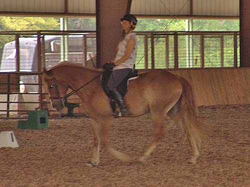
We worked more on staying in frame.
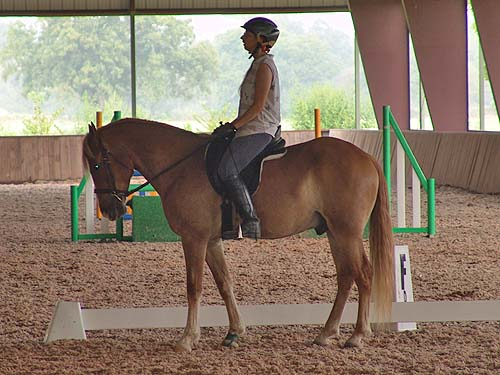
Even in the halt we had to concentrate and work.
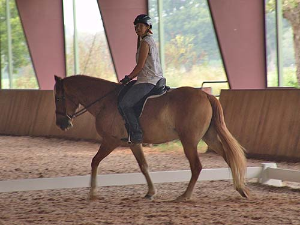
Paying attention to the instructor.
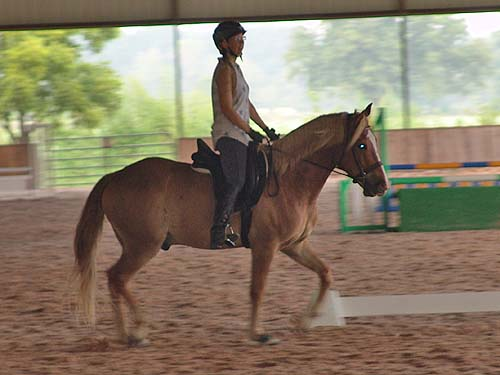
Picking up the trot and getting both of us working.
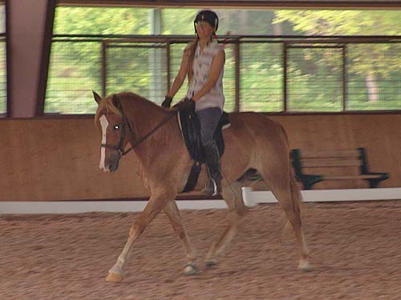
He gave us some lovely work.
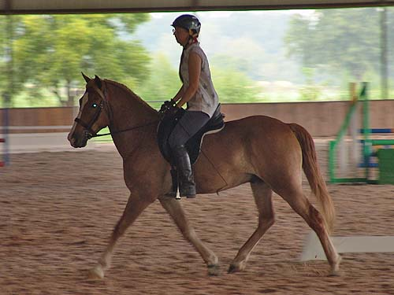
He was sometimes distracted by things outside the arena.
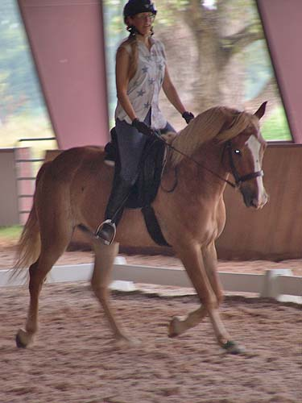
He's a bit flashy with the blonde mane and blaze.
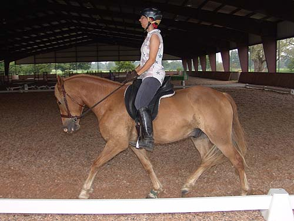
When he'd start to dip behind the vertical I was supposed to put my leg on and ask for more engagement.
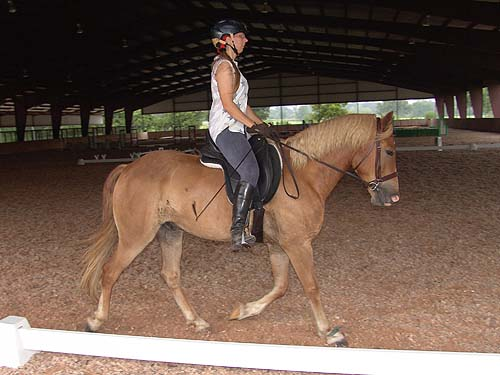
He's not completely steady with his head, but the range of where he puts it is much smaller.
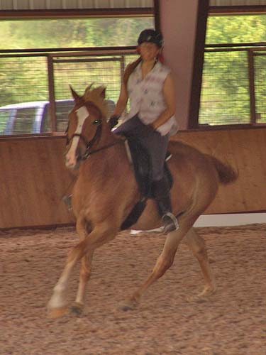
He still lifts his head for the canter transition.
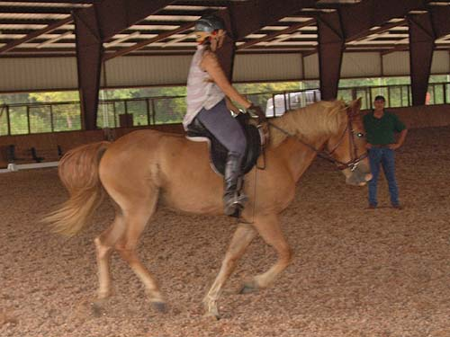
But the canter itself is pretty good. I think we need to slow it down, but he'll need to develop strength for that.
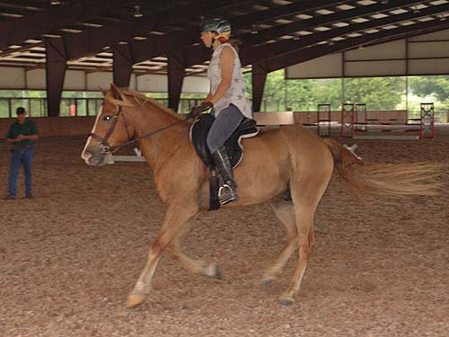
He gets closer to on the vertical each ride.
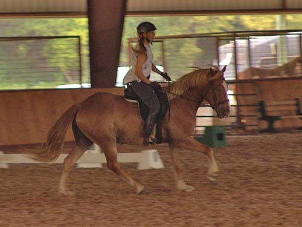
I can usually get what I want after a few strides.
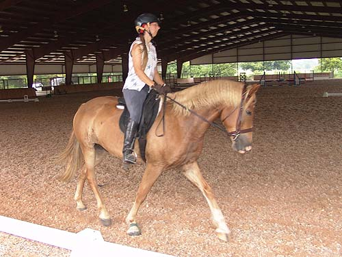
After the canter his trot work is usually a bit more animated.
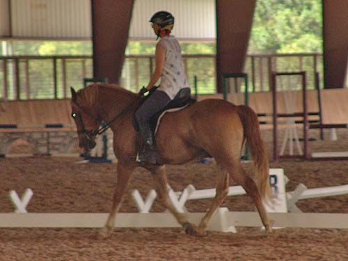
It's still work to keep him in a nice frame, but more finesse than strength.
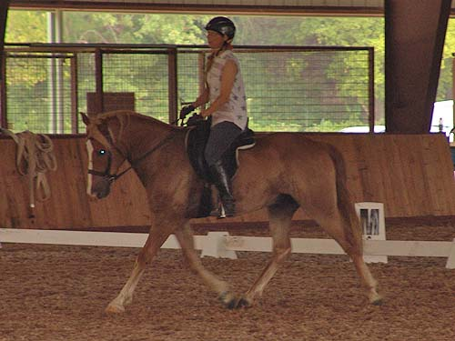
When we're warmed up and working, I'm impressed with all the progress he's shown.